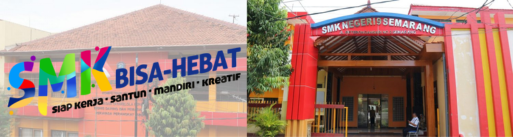

Sejarah SMKN 9 Semarang

Pada mulanya di kota Semarang hanya ada satu Sekolah Menengah Ekonomi Tingkat Atas (SMEA) yaitu SMEA Semarang yang berlokasi di Jl. Plampitan 35 Semarang yang berdiri tahun 1951. Berhubung dari tahun ke tahun semakin banyak animo masyarakat untuk masuk SMEA, sehingga SMEA Semarang tidak mampu menampung seluruh pendaftar, sehingga perlu dibangun lagi SMEA yang baru.
Mulai Tahun Pelajaran 1974 SMEA Semarang membuka kelas filial/kelas jauh yang berlokasi di Jl Peterongansari No. 2 Semarang sebanyak 4 kelas. Tahun berikutnya jumlah siswa semakin bertambah. Berdasarkan SK Menteri Pendidikan dan Kebudayaan Nomor 0287/0/1976 tanggal 29 Nopember 1976 mulai tahun Pelajaran 1977 statusnya dinyatakan berdiri sendiri dan ditetapkan sebagai SMEA Pembina 2 Semarang. Berdasarkan Surat Keputusan Menteri Pendidikan dan Kebudayaan Republik Indonesia Nomor C.436/O/1981 tanggal 30 Desember 1981 SMEA Pembina 2 diubah statusnya menjadi SMEAN 2 Semarang.
Selanjutnya berdasarkan Surat Edaran Sekjen Depdikbud Nomor 410007/A.A5/OT/1997 tanggal 3 April 1997 perihal tindak lanjut Keputusan Menteri Pendidikan dan Kebudayaan Nomor 034. 035 dan 036/O/1997 tentang perubahan nomenklatur SMP menjadi SLTP . SMA mejadi SMU, dan SMKTA menjadi SMK, maka SMEA 2 Semarang berubah namanya menjadi SMK Negeri 9 Semarang.
SMK Negeri 9 merupakan salah satu Sekolah Menengah Kejuruan (SMK) di Indonesia yang sejak tahun pelajaran 1994/1995 telah ditunjuk sebagai SMK yang melaksanakan Pendidikan Sistem Ganda (PSG). PSG dimaksud adalah suatu bentuk penyelenggaraan pendidikan keahlian professional yang memadukan secara sistematis dan sinkron antara program pendidikan di sekolah dan program penguasaan keahlian yang diperoleh melalui kegiatan bekerja langsung di dunia kerja, terarah untuk mencapai suatu tingkat keahlian professional tertentu.
Pelaksanaannya melalui Praktik Kerja Industri (Prakerin) yang mulai diberlakukan pada siswa tingkat II semester 4 dan kelas III semester 5 selama 4 bulan. Mulai tahun pelajaran 2009/2010 pelaksanaan prakerin dimulai dari kelas II semester 3 dan 4 selama 6 bulan. Sebagai konsekwensi dari pelaksanaan PSG diperlukan adanya Institusi Pasangan (IP) dari Dunia Usaha/Dunia Industri (DU/DI) sebagai partner untuk melaksanakan Program Keahlian.